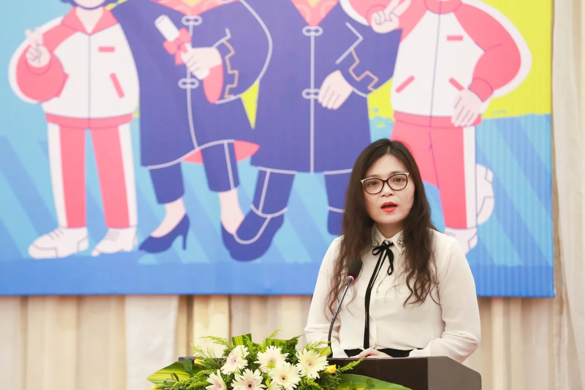
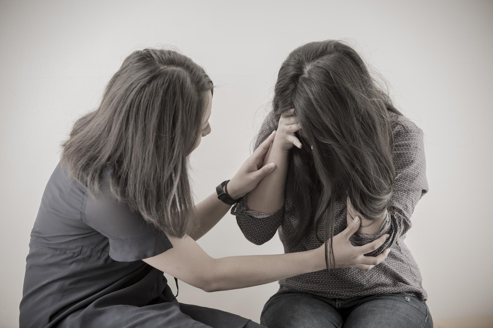
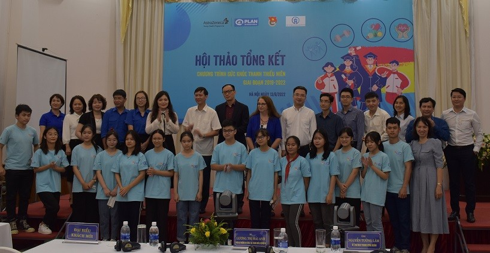

Hôm nay 26/3 kỷ niệm tròn 91 năm thành lập Đoàn TNCS Hồ Chí Minh, hòa trong niềm tự hào phấn khởi của tuổi trẻ cả nước, thay mặt lãnh đạo Đảng và Nhà nước, tôi vui mừng tham dự Lễ trao Giải thưởng Gương mặt trẻ Việt Nam tiêu biểu và gương mặt trẻ triển vọng năm 2021 - tôn vinh những tài năng trẻ ưu tú của đất nước và thân ái gửi tới toàn thể các Bạn đoàn viên, thanh niên, các cháu thiếu nhi yêu quý trong cả nước cùng quý vị đại biểu, các đồng chí và các bạn lời chúc sức khỏe, hạnh phúc và thành công
Trung ương Đoàn TNCS Hồ Chí Minh cần tiếp tục chỉ đạo triển khai sâu rộng, hành động mạnh mẽ, thiết thực hiệu quả hơn nữa hoạt động “Tuổi trẻ Việt Nam tự hào tiến bước dưới cờ Đảng”, hướng tới Đại hội Đoàn toàn quốc lần thứ XII nhiệm kỳ 2022 - 2027. Đoàn thanh niên là đội dự bị tin cậy của Đảng Cộng sản Việt Nam, là lực lượng xung kích với khát vọng cống hiến là lẽ sống của tuổi trẻ và là nguồn nội sinh to lớn cho sự nghiệp đổi mới, hội nhập, phát triển đất nước
Thanh thiếu niên Việt Nam: Sức trẻ dẻo dai, nhiệt huyết tràn đầy, ý chí và khát vọng

Chương trình Sức khỏe thanh thiếu niên Việt Nam tạo nên tác động đáng kể cho sức khỏe thanh thiếu niên trong nước
Tiếp cận trực tiếp hơn 49.300 thanh thiếu niên để trang bị kiến thức phòng chống bệnh không lây nhiễm trong hơn ba năm. Nội dung phòng chống bệnh không lây nhiễm được lồng ghép vào Chiến lược phát triển thanh niên Việt Nam 2021 - 2030.
AstraZeneca Việt Nam và Tổ chức Plan International Việt Nam vừa tổ chức sự kiện để nhìn lại tiến trình thực hiện và tác động tích cực của Chương trình Sức khỏe Thanh thiếu niên tại Việt Nam trong ba năm vừa qua, cùng với hai đối tác thực hiện là Trung tâm Thanh thiếu niên Trung ương và Trung tâm Kiểm soát Bệnh tật thành phố Hà Nội.
Chương trình Sức khỏe Thanh thiếu niên là một sáng kiến toàn cầu nhằm đầu tư cho cộng đồng của AstraZeneca, tập trung vào đối tượng thanh thiếu niên, giúp họ phòng chống các bệnh không lây nhiễm phổ biến nhất: ung thư, tiểu đường, bệnh tim mạch, bệnh phổi mãn tính và các rối loạn sức khỏe tâm thần.
AstraZeneca Việt Nam và Tổ chức Plan International Việt Nam vừa tổ chức sự kiện để nhìn lại tiến trình thực hiện và tác động tích cực của Chương trình Sức khỏe Thanh thiếu niên tại Việt Nam trong ba năm vừa qua, cùng với hai đối tác thực hiện là Trung tâm Thanh thiếu niên Trung ương và Trung tâm Kiểm soát Bệnh tật thành phố Hà Nội.
Chương trình Sức khỏe Thanh thiếu niên là một sáng kiến toàn cầu nhằm đầu tư cho cộng đồng của AstraZeneca, tập trung vào đối tượng thanh thiếu niên, giúp họ phòng chống các bệnh không lây nhiễm phổ biến nhất: ung thư, tiểu đường, bệnh tim mạch, bệnh phổi mãn tính và các rối loạn sức khỏe tâm thần.

Ghi nhận cho các trường đóng góp tích cực cho Chương trình Sức khỏe Thanh thiếu niên
Trong hơn ba năm qua, gần 100 khóa đào tạo để cải thiện kiến thức bệnh không lây nhiễm và kỹ năng mềm đã được tổ chức cho các giáo dục viên đồng đẳng, bao gồm nhóm thanh thiếu niên, cha mẹ của họ và các nhà thủ lĩnh cộng đồng. N, Giáo dục viên đồng đẳng thuộc dự án YHP cho biết “Chương trình thực sự hữu ích vì nó trang bị cho người trẻ như em kiến thức và khả năng để không chỉ dẫn dắt mà còn giúp đỡ những người xung quanh em.”

Báo cáo Nghiên cứu về Sức khỏe tâm thần và tâm lý xã hội của trẻ em và thanh niên tại Việt Nam
Nghiên cứu về ‘Sức khỏe tâm thần và tâm lý xã hội của trẻ em và thanh thiếu niên tại một số tỉnh và thành phố ở Việt Nam’ do Viện Nghiên cứu và Phát triển (ODI) tiến hành và hỗ trợ kỹ thuật là một trong những hoạt động thuộc khuôn khổ chương trình hợp tác giữa UNICEF Việt Nam và Bộ Lao động, Thương binh và Xã hội (Bộ LĐTBXH). Nghiên cứu này nhằm mục đích cung cấp một cái nhìn tổng quan về tình hình sức khỏe tâm thần và tâm lý xã hội của trẻ em và thanh thiếu niên ở Việt Nam.

Phát động cuộc thi tương tác trực tuyến 'Thanh niên chuẩn - Nói không với định kiến giới'
Chúng tôi tự hào về những thành tựu của YHP đạt được, vì không những nâng cao nhận thức về dự phòng bệnh không lây nhiễm, chương trình còn thúc đẩy các chính sách mang lại lợi ích lâu dài cho thanh thiếu niên. Trước những kết quả đáng khích lệ này, AstraZeneca đang tìm kiếm cơ hội để tiếp tục hỗ trợ cho giai đoạn tiếp theo của YHP Việt Nam". Bà Sharon Kane - Giám đốc Quốc gia Plan International tại Việt Nam, cũng cho rằng: “YHP Việt Nam hỗ trợ thanh niên nâng cao nhận thức và kiến thức về cách phòng chống các bệnh không lây nhiễm như chế độ dinh dưỡng lành mạnh, tăng cường hoạt động thể lực, giảm sử dụng rượu bia, thuốc lá, góp phần loại bỏ ô nhiễm không khí để đảm bảo các em có một khởi đầu tốt nhất trong cuộc sống tương lai”.